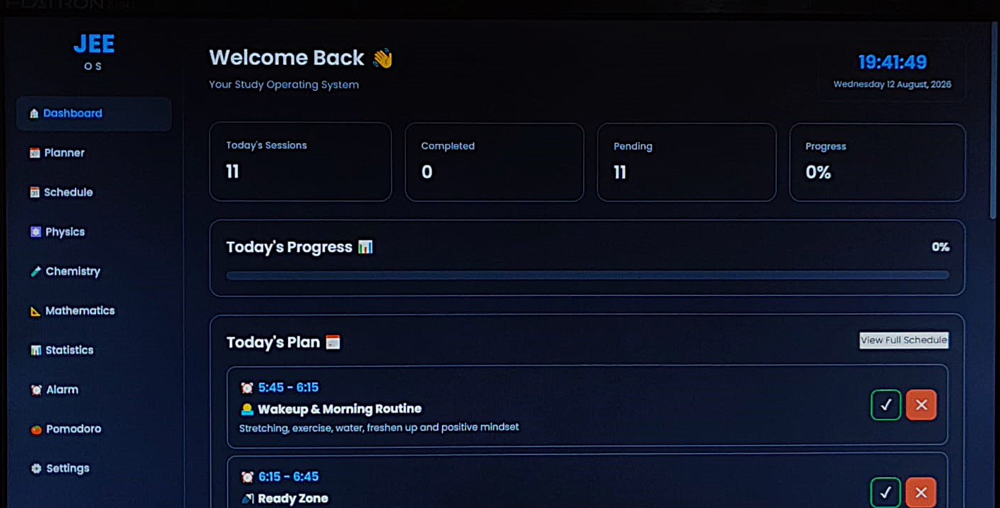
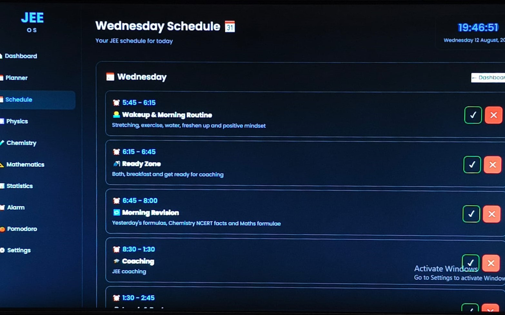
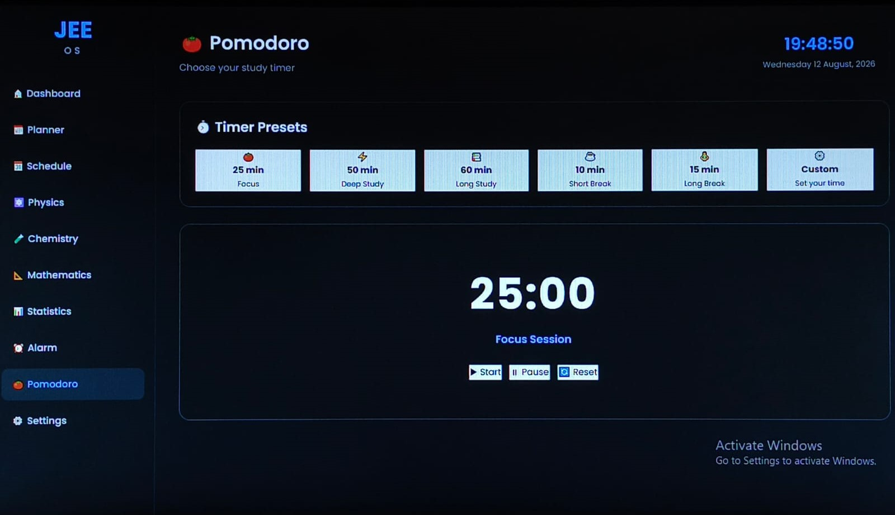
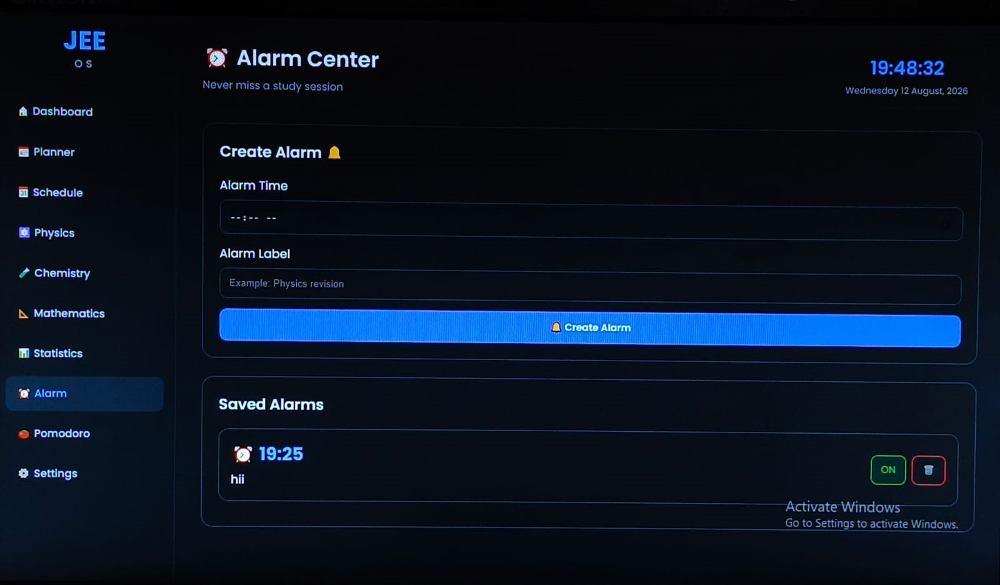

Shaurya JEE
JEE Command Center
Your personal JEE Study Operating System
Plan smarter. Study consistently. Track your progress.
Download JEE Command CenterFeatures
Everything you need to manage your JEE preparation in one place.
Dashboard
Get a complete overview of your JEE preparation. See your progress, tasks and study activity at a glance.

Schedule
Organize your study sessions and manage your daily JEE preparation with a clear schedule.

Statistics
Track your preparation and understand your study progress through useful statistics.


Pomodoro
Stay focused with dedicated study and break sessions using the Pomodoro technique.

Alarm & Notifications
Never miss an important study session. Set alarms and receive notifications when your scheduled study time arrives.

Settings
Customize Shaurya JEE according to your preferences and study workflow.


About Shaurya OS
Shaurya OS is a personal study operating system designed to make JEE preparation more organized, focused and consistent.
Instead of using multiple tools for planning, tracking and focused study, JEE Command Center brings the important parts together in one desktop application.